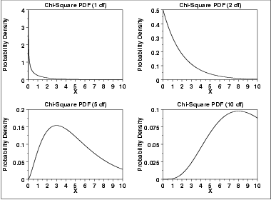
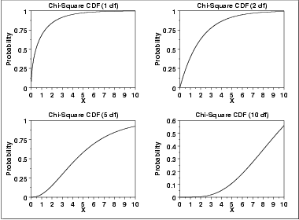
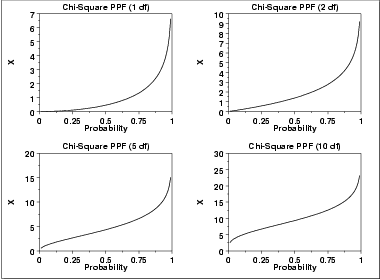

|
1.
Exploratory Data Analysis
1.3. EDA Techniques 1.3.6. Probability Distributions 1.3.6.6. Gallery of Distributions
|
|||||||||||||||||
| Probability Density Function |
The chi-square distribution results when ν independent variables
with standard normal distributions are squared
and summed. The formula for the probability
density function of the chi-square distribution is
\( f(x) = \frac{e^{\frac{-x} {2}}x^{\frac{\nu} {2} - 1}} {2^{\frac{\nu} {2}}\Gamma(\frac{\nu} {2}) } \;\;\;\;\;\;\; \mbox{for} \; x \ge 0 \) where ν is the shape parameter and Γ is the gamma function. The formula for the gamma function is \( \Gamma(a) = \int_{0}^{\infty} {t^{a-1}e^{-t}dt} \) In a testing context, the chi-square distribution is treated as a "standardized distribution" (i.e., no location or scale parameters). However, in a distributional modeling context (as with other probability distributions), the chi-square distribution itself can be transformed with a location parameter, μ, and a scale parameter, σ. The following is the plot of the chi-square probability density function for 4 different values of the shape parameter.  |
||||||||||||||||
| Cumulative Distribution Function |
The formula for the cumulative distribution
function of the chi-square distribution is
\( F(x) = \frac{\gamma(\frac{\nu} {2},\frac{x} {2})} {\Gamma(\frac{\nu} {2})} \;\;\;\;\;\;\; \mbox{for} \; x \ge 0 \) where Γ is the gamma function defined above and γ is the incomplete gamma function. The formula for the incomplete gamma function is \( \Gamma_{x}(a) = \int_{0}^{x} {t^{a-1}e^{-t}dt} \) The following is the plot of the chi-square cumulative distribution function with the same values of ν as the pdf plots above.  |
||||||||||||||||
| Percent Point Function |
The formula for the percent point
function of the chi-square distribution does not exist in
a simple closed form. It is computed numerically.
The following is the plot of the chi-square percent point function with the same values of ν as the pdf plots above.  |
||||||||||||||||
| Other Probability Functions | Since the chi-square distribution is typically used to develop hypothesis tests and confidence intervals and rarely for modeling applications, we omit the formulas and plots for the hazard, cumulative hazard, survival, and inverse survival probability functions. | ||||||||||||||||
| Common Statistics |
|
||||||||||||||||
| Parameter Estimation | Since the chi-square distribution is typically used to develop hypothesis tests and confidence intervals and rarely for modeling applications, we omit any discussion of parameter estimation. | ||||||||||||||||
| Comments | The chi-square distribution is used in many cases for the critical regions for hypothesis tests and in determining confidence intervals. Two common examples are the chi-square test for independence in an RxC contingency table and the chi-square test to determine if the standard deviation of a population is equal to a pre-specified value. | ||||||||||||||||
| Software | Most general purpose statistical software programs support at least some of the probability functions for the chi-square distribution. | ||||||||||||||||